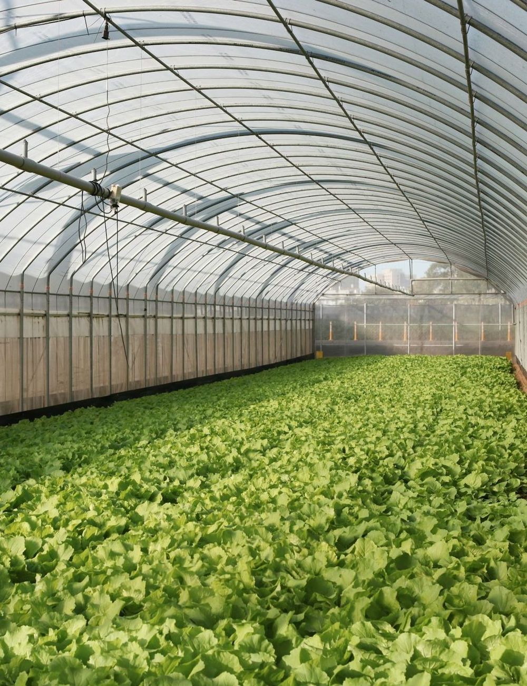
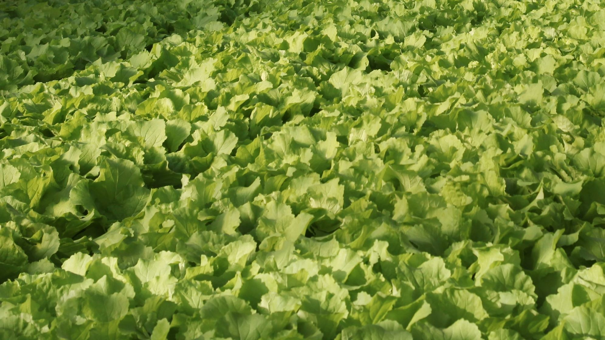

Greenhouses on top of the grocery stores that sell what they grow.
Seed round · 2026

1,800
miles from field to shelf, on average
6 days
in transit, losing shelf life every hour
14%
of leafy greens are thrown out unsold
Illustrative figures for a fictional company.
A typical supermarket roof is 40,000 sq ft: flat, sunny, built to carry load, and empty.
40,000 sq ft
5:40 am
Harvest
Picked at dawn, roots on
6:05
Pack
Washed and boxed in the rooftop pack room
6:12
Lift
Down the store’s own freight lift
6:18
Shelf
On display, 38 minutes after picking
We lease the roof and fund the build. The grocer pays nothing.

38
Shrink on our greens: 4%,
against 14% for trucked greens
Median across our three pilot stores. Photo: wei / Unsplash. Figures illustrative.
6.9×
growth from Q3 2025
to Q3 2026
$1.05M
annual run rate. Roofs 2 and 3 went live in Q1 and Q2 2026.
Fernway finance, illustrative.
Per roof per year: a 30% contribution margin before overhead. Fernway per-roof model, illustrative.
26
months to pay back a $270k roof build
How we sized it
9,400 stores in the top 50 metros have a flat, load-rated roof over 25,000 sq ft. At $413k a roof, that is $3.9B.
4%
of those roofs are our 2030 goal:
400 roofs, $165M a year.
Fernway market analysis, illustrative. TAM: US grocery spend on leafy greens and herbs.
| Model | Distance to shelf | Cost to grocer | Shelf life | Energy per lb |
|---|---|---|---|---|
| Fernway rooftop | 1 floor | $0 | 12–14 days | 2 kWh |
| Indoor vertical farm | 40–150 miles | $0 | 10–12 days | 11 kWh |
| Field farm and cold chain | ~1,800 miles | $0 | 5–7 days | 0.4 kWh + diesel |
| In-store growing cabinets | 0 miles | $25k+ each | 10 days | 14 kWh |
Fernway competitive analysis, illustrative. Energy per lb of leafy greens, growing only.
3
2026
Three pilot roofs live
with one regional grocer
9
2027
Nine roofs, and a second
grocery chain signs
20
End of 2028
Twenty roofs and
an $8.3M run rate
$3.5M
roof builds
$1.6M
team and ops
$0.9M
software
founders@fernway.example
Fernway is a fictional company. All figures are illustrative.